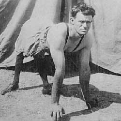

|
| Home | Talent | Cosmetic | Deformity | Abnormal | Ethnological |
Pony Boy
Pony Boy is just an example of a harsh name given to someone witha server deformity. For many years the world only knew Robert Huddleston as The Pony Boy and by the astoundingimages depicting his unusual posture. Following his years of travel with carnivals as a human exhibit his true name and story were nearly lost to history and his story of personal triumph and perseverance has only recently resurfaced. Robert Huddleston was likely afflicted with a very advanced form ofcongenital genu recurvatum – also known as ‘back knee deformity’. By most accounts, Robert was unable to stand erect or use crutches and so he lived and trekked about exclusively on all fours.
Despite what appeared to be a crippling affliction Huddleston lived a remarkably active lifestyle and possesses a remarkable work ethic. Born around Excelsior Springs, Missouri in 1895 Robert Huddleston spent much of his childhood working chores on the family farm by milking cows, loading stock and harvesting crops. Huddleston spent his early adulthood employed as a logging teamster where he hauled trees and lumber some fifteen miles a day while affixed to a wagon. He protected his hands from rocks and bush debris by lashing small wooden blocks to his hands with leather and as a result of this heavy labour Huddleston’s arm and shoulder strength practically became legendary among his peers. To punctuate his independence and mechanical inclination Huddleston was employed as a blacksmith and temporary as a carpenter during World War II. To those who knew him, Robert was a kind hearted and hardworking man who ignored his perceived limitations. Most came to not even notice his physical condition as it was never an issue. Still, strangers stared and work became rather scarce following WWII and Huddleston soon considered exhibiting his physical appearance and extraordinary independence for profit.
Huddleston came to be known as The Pony Boy following the war while showcasing his physical uniqueness for the first time with a small carnival located in Texas. The brief stint proved incredibly successful, likely due in part to his exceptional work ethic, and led to more work with several larger organizations. Eventually Huddleston toured all of North American with the Tom Mix Circus. His act consisted primarily of displays of strength combined with unique flexibility. It’s been said that he was able to throw his right leg over his shoulder like a bale of wood. All told, Huddleston spent 36 years displaying his exceptionality for profit. Robert Huddleston eventually came to retire in Fremont where he continued his active lifestyle, restoring automobiles and raising rabbits. He passed away in 1970 after living his life to its fullest. |